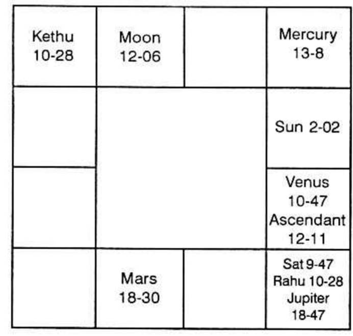
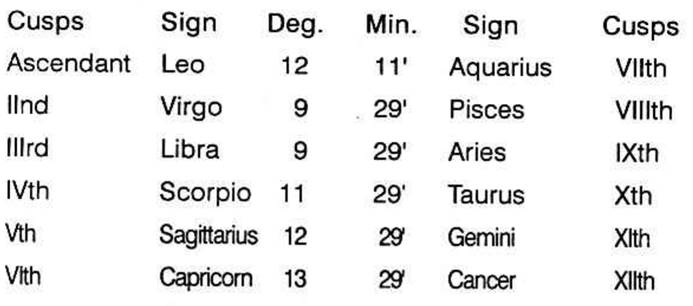
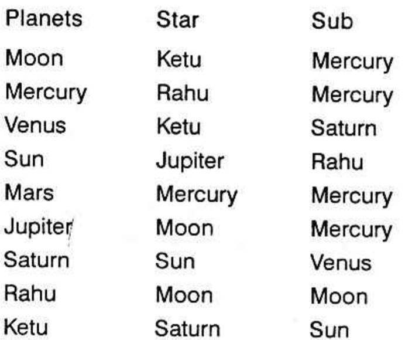

A Native - Male.
Born on 18th July, 1922, Tuesday at 8-18′ A.M. I.S.T. =8.28.4″ A.M. L.M.T.
Place - Lat. 24°48′ N. Long. 85°01′ E.
K.P. Ayanamsa - 22°40′.



For termination of service, the houses 1, 5, 9 & 12 are to be judged. The 1st house is negation of 2nd (self-acquisition). The 5th is negation of 6th (service). The 9th is negation of 10th (status). The 12th is the general house of loss. Termination of service takes place under the conjoined period of the planets connected with these houses. The following Scientific Method is to be pursued uniformly to judge such a problem. Let us take up one by one.
The 1st house is unoccupied. Its lord is Sun. In its constellation Saturn is posited. Therefore, Saturn is a strong significator.
The 5th house is also unoccupied by any planet. Its lord is Jupiter. Sun is in Jupiter’s star, but it happens to be in the 11th house - the house of gains. Jupiter being in the constellation of the Moon, lord of 12 and occupant of 9th is stronger than the Sun.
The 9th house is occupied by the Moon. Rahu and Jupiter are in the constellation of the Moon. Mars, the lord of 9th, in the constellation and sub of Mercury - lord of 2 and 11, is in 4 and so only a feeble significator.
The 12th house is occupied by Venus. Saturn is posited in the Sub of Venus. The Moon rules the 12th and is placed in the 9th. Rahu and Jupiter, in the constellation of the Moon are stronger than the Moon, to give the effects of the 9th and 12th houses.
The readers will be surprised to note that the significators discussed above conjointly brought about Termination of Service during Rahu Dasa, Jupiter Bhukti, Saturn Anthra, i.e., from 18-3-1969 to 5-8-1969. The houses 1, 5, 9 & 12, fully played their role. It is a sufficient proof of the efficacy of K.P.